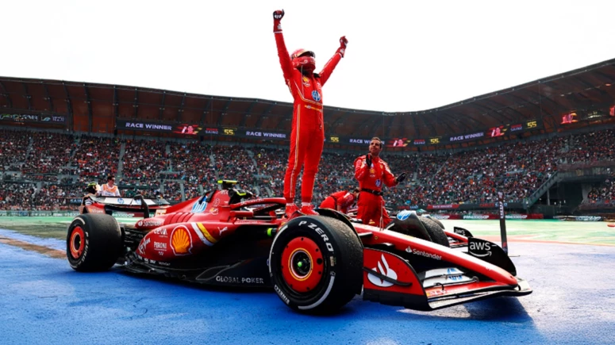
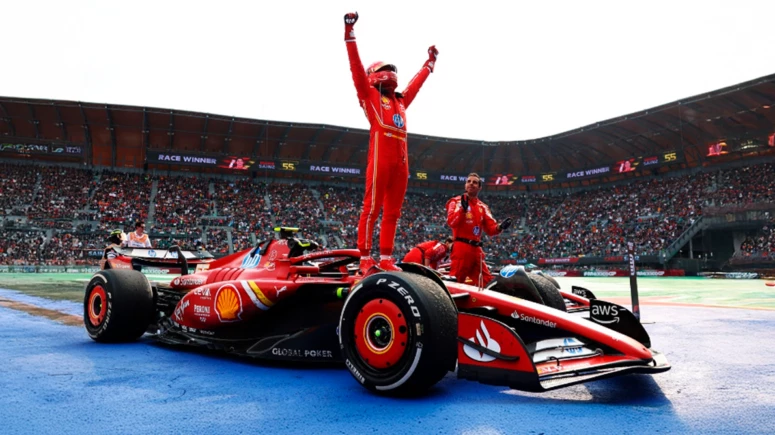

Charles Leclerc
Charles Leclerc (nascido em 1997, em Mônaco) corre pela Ferrari e é considerado uma das maiores promessas da F1. Começou sua trajetória nas categorias de base, se destacando no karting e subindo rapidamente para a GP3, onde foi campeão em 2016. Em 2018, fez sua estreia na F1 com a Sauber (atualmente Alfa Romeo Racing) e, no ano seguinte, foi promovido à Ferrari. Em 2019, Leclerc teve um impacto imediato, vencendo duas corridas e mostrando habilidades excepcionais. Apesar de ainda não ter conquistado o título mundial, Leclerc é uma figura chave na Ferrari e é visto como um dos principais pilotos da nova geração, com grande potencial para brigar por campeonatos no futuro.

Max Verstappen
Max Verstappen (nascido em 1997, na Bélgica) é piloto da Red Bull Racing e um dos grandes talentos da F1. Filho do ex-piloto Jos Verstappen, Max iniciou sua carreira no karting e, aos 17 anos, fez sua estreia na F1 em 2015 com a Toro Rosso (hoje AlphaTauri), tornando-se o piloto mais jovem da história da categoria. Em 2016, foi promovido à Red Bull Racing e venceu sua primeira corrida no GP da Espanha, aos 18 anos, tornando-se o vencedor mais jovem de uma corrida de F1. Com uma condução agressiva e habilidade técnica impressionante, Verstappen conquistou seu primeiro título mundial em 2021, após uma temporada histórica marcada pela intensa rivalidade com Lewis Hamilton..

Lewis Hamilton
Lewis Hamilton (nascido em 1985, em Stevenage, Inglaterra) é amplamente considerado um dos maiores pilotos da história da Fórmula 1. Após se destacar no karting, Hamilton fez sua estreia na F1 em 2007 com a McLaren, quase conquistando o título em seu ano de estreia. Em 2008, conquistou seu primeiro campeonato mundial, tornando-se o campeão mais jovem da história da F1 até então. Em 2013, se transferiu para a Mercedes, onde iniciou uma era de domínio, conquistando 7 títulos mundiais, empatando com Michael Schumacher no recorde de campeonatos. Além de seu sucesso nas pistas, Hamilton é um ativista social e político, conhecido por seu trabalho em prol da igualdade racial, direitos humanos e questões ambientais, sendo uma das figuras mais influentes do esporte fora das pistas.

 
